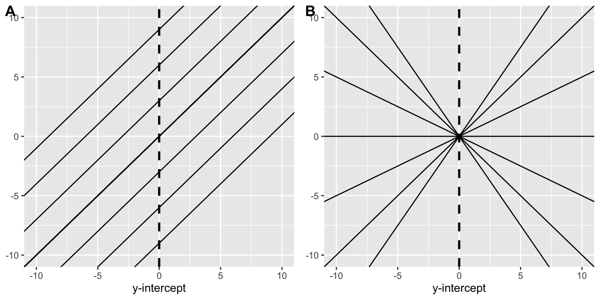

pacman::p_load(car, # qqPlot function
cowplot, # apa plotting
tidyverse, # tidyverse goodness
psych, # descriptive stats
lm.beta, # getting a standard coefficient
broom, # tidy lm output
olsrr # testing heteroscadicity.
) 21 Regression, pt. 1: Running the model
Please note that this walkthrough assumes that you have the following packages installed and loaded in R:
21.1 Fitting the data to a model
As social scientists, we are not only concerned with observation, but also with explanation. Measures of correlation provide us with the former; we use regression methods to build models in service of the latter. Again both the assigned texts provide excellent overviews of regression, so I won’t repeat much of what they say here.
For the purposes of this vignette (and this course) we will limit ourselves to linear regression, that is describing a line that best fits our data. By “fit” we mean a line than when compared to our observed data minimizes our squared residuals.
21.2 The Relationship b/tw Stress and Health
Let’s revisit our data from the first walk-through:
Wagner, Compas, and Howell (1988) investigated the relationship between stress and mental health in first-year college students. Using a scale they developed to measure the frequency, perceived importance, and desirability of recent life events, they created a measure of negative events weighted by the reported frequency and the respondent’s subjective estimate of the impact of each event. This served as their measure of the subject’s perceived social and environmental stress. They also asked students to complete the Hopkins Symptom Checklist, assessing the presence or absence of 57 psychological symptoms.
This data can be accessed directly from this companion website for Howell’s stats textbook.
stress_data <- read_table("https://www.uvm.edu/~statdhtx/methods8/DataFiles/Tab9-2.dat")
── Column specification ────────────────────────────────────────────────────────
cols(
ID = col_double(),
Stress = col_double(),
Symptoms = col_double(),
lnSymptoms = col_double()
)psych::describe(stress_data) vars n mean sd median trimmed mad min max range skew
ID 1 107 54.00 31.03 54.00 54.00 40.03 1.00 107.00 106.00 0.00
Stress 2 107 21.29 12.49 20.00 20.49 11.86 1.00 58.00 57.00 0.62
Symptoms 3 107 90.33 18.81 88.00 88.87 17.79 58.00 147.00 89.00 0.74
lnSymptoms 4 107 4.48 0.20 4.48 4.48 0.19 4.06 4.99 0.93 0.21
kurtosis se
ID -1.23 3.00
Stress -0.19 1.21
Symptoms 0.45 1.82
lnSymptoms -0.28 0.02To perform a linear regression we may call upon the lm() function. This function uses formula notation outcome variable ~ predictor variable(s). A simple regression has a single predictor. More often in our analyses we are concerned with the relative effects of multiple predictors, but this is multiple regression and saved for the Spring course. Here, we may be interested in the degree to which perceived Stress contributes to the number of lnSymptons, or using formula terminology: “How do lnSymptoms (outcome) vary as a function of Stress (predictor)”. This is represented in R as stress_data$lnSymptoms~stress_data$Stress
21.3 Linear models in R
Let’s run the model we introduced in the last section. Note that instead of specifying the data frame for each variable, I can place it in the data= argument.
lm(lnSymptoms~Stress,data = stress_data)
Call:
lm(formula = lnSymptoms ~ Stress, data = stress_data)
Coefficients:
(Intercept) Stress
4.300537 0.008565 This output gives us our intercept and slope coefficients. That said, theirs more lurking behind this output. The resulting output of the lm() function is an object with the class lm. This simply means that R understands that this object is storing a linear model. Hiding behind this spartan output is a multitude of info that may be accessed via its attributes or it may be thrown into other functions for additional info and analysis. My tip… GET IN THE HABIT OF SAVING (ASSIGNING) YOUR MODELS. In this case let’s assign the model we just ran to stress_symptoms_model
stress_symptoms_model <- lm(lnSymptoms~Stress,data = stress_data)
21.3.1 Attributes of class lm:
As I mentioned above, lm objects contain various attributes that may be accessed using the names convention, $nameOfAttribute.
For example, returning to the stress_symptoms_model object we created above, we may get a glimpse of its attributes by:
attributes(stress_symptoms_model)$names
[1] "coefficients" "residuals" "effects" "rank"
[5] "fitted.values" "assign" "qr" "df.residual"
[9] "xlevels" "call" "terms" "model"
$class
[1] "lm"stress_symptoms_model$residuals 1 2 3 4 5 6
0.037639323 0.011508729 0.004407164 -0.223337657 0.278938976 0.262339353
7 8 9 10 11 12
-0.216226628 0.008264362 -0.193462063 0.204051115 0.133337343 -0.155679251
13 14 15 16 17 18
-0.045884469 0.028334551 -0.155679251 -0.254621647 -0.137363093 0.016773551
19 20 21 22 23 24
0.357607907 0.243820353 -0.282917628 0.033932947 -0.064990034 0.407257917
25 26 27 28 29 30
0.003404758 0.021897739 0.035071937 0.189244294 0.108281966 -0.013123706
31 32 33 34 35 36
-0.234484836 0.219322294 -0.176332459 -0.030854449 -0.183458251 0.262268521
37 38 39 40 41 42
-0.239353647 -0.046311261 0.101345155 -0.107814044 -0.140097291 -0.370393063
43 44 45 46 47 48
0.021897739 0.166111353 0.126967897 0.032561729 0.073479541 0.006251511
49 50 51 52 53 54
-0.160091093 -0.033866242 -0.089593420 0.110316333 0.082044343 -0.038040440
55 56 57 58 59 60
-0.009426726 -0.070215895 0.026507135 -0.206792222 -0.215357024 -0.055546449
61 62 63 64 65 66
-0.291503706 -0.136643865 0.003404758 0.126759115 -0.043850103 0.088591947
67 68 69 70 71 72
0.140416947 -0.274251885 0.356359125 -0.034559647 0.004783570 -0.172322132
73 74 75 76 77 78
-0.163087291 0.006961956 0.306215758 -0.100953836 -0.017485657 0.066205125
79 80 81 82 83 84
-0.029852044 0.100660511 -0.239370083 -0.066710063 -0.070121261 -0.134714420
85 86 87 88 89 90
0.278938976 0.092780353 0.251559956 -0.428892905 0.105060560 0.039027343
91 92 93 94 95 96
0.054768927 0.350241155 -0.170835232 -0.025250034 0.053197164 0.031945917
97 98 99 100 101 102
-0.175912826 -0.011625261 0.058350768 0.233516155 0.338095135 -0.055170044
103 104 105 106 107
-0.308985677 0.228080145 0.052651115 0.076727164 0.042924729 This command tells us the names of several attributes (values) that are stored in stress_symptoms_model. Typically we are interested in the $coefficients, fitted.values (aka predicted values), and $residuals. Recall that in our model fitted.values are the predicted values of lnSymptoms for each value of Stress, that is those values that fall along the line of best fit. residuals are the difference between our observed values of lnSymptoms and those predicted by the model. Mathematically stress_symptoms_model$residuals is equivalent to:
stress_data$lnSymptoms - stress_symptoms_model$fitted.values21.3.2 Testing the residuals
An important assumption test for our model is that the residuals are normally distributed. In fact some argue that this is more important than than having normal distributions in the raw data itself. Quickly, we can test this using the regular methods:
Question: Run a Shapiro-Wilkes test on our stress_symptoms_model residuals. How do we feel about the residuals here?
# test the stress_symptoms_model residulasWe’ll return to diagnosing your regression model for violations of your assumptions (normality & heteroscadicity) in an an upcoming walkthrough. For now, I just wanted to use this as an example of extracting values from your model.
21.3.3 Using your lm object with other functions
As I mentioned above you may also use lm objects with other functions. For example, for our model stress_symptoms_model:
summary(stress_symptoms_model)
Call:
lm(formula = lnSymptoms ~ Stress, data = stress_data)
Residuals:
Min 1Q Median 3Q Max
-0.42889 -0.13568 0.00478 0.09672 0.40726
Coefficients:
Estimate Std. Error t value Pr(>|t|)
(Intercept) 4.300537 0.033088 129.974 < 2e-16 ***
Stress 0.008565 0.001342 6.382 4.83e-09 ***
---
Signif. codes: 0 '***' 0.001 '**' 0.01 '*' 0.05 '.' 0.1 ' ' 1
Residual standard error: 0.1726 on 105 degrees of freedom
Multiple R-squared: 0.2795, Adjusted R-squared: 0.2726
F-statistic: 40.73 on 1 and 105 DF, p-value: 4.827e-09provides us with info about the coefficients, their standard error, t-scores, and corresponding p-values (Pr>|t|). It also provides us with our \(r^2\) and adjusted \(r_{adj}^2\) (which corresponds to our \(r\) and \(r_{adj}\) from above).
Coincidentally we can also call the individual attributes of this summary as well:
summary(stress_symptoms_model) %>% attributes()$names
[1] "call" "terms" "residuals" "coefficients"
[5] "aliased" "sigma" "df" "r.squared"
[9] "adj.r.squared" "fstatistic" "cov.unscaled"
$class
[1] "summary.lm"summary(stress_symptoms_model)$coefficients Estimate Std. Error t value Pr(>|t|)
(Intercept) 4.300536618 0.033087547 129.974478 8.085268e-118
Stress 0.008564802 0.001342063 6.381819 4.827486e-09For what it’s worth, Bodo Winter (optional text) is a fan of using the tidy function from the broom package to clean up the output. I prefer summary but can understand the desire for clean and to the point output.
21.4 A note on degrees of freedom of our model
The general equation for calculating the requisite degrees of freedom of a model is \(n-k\) where \(n\) is the number of observations (or later conditions) and \(k\) is the number of parameters that are required to be known for the calculation.
Recall how we calculate variance / standard deviation. We take the sum of the squared deviations from the mean \(\sum(X-\bar{X})\) and divide by \((n-1)\). Remember that we are subtracting that 1 because in order to calculate the variance we must keep one thing constant, the mean. In this case the mean is our parameter that must be known in order to calculate the variance.
We can now ask the question “what must be known in order to derive the line of best fit?”, or more simply what must one know in order to create a particular line. We must know both the line’s slope and its intercept. Knowing slope alone leads to the indeterminism presented in Fig A (identical slopes, infinitely-many intercepts), intercept alone leads to indeterminism presented in Fig B (identical intercept, infinitely-many slopes). We need both to define a particular line. Just like the mean above, these are the two parameters that must be locked-in to derive our model.
Warning: Using `size` aesthetic for lines was deprecated in ggplot2 3.4.0.
ℹ Please use `linewidth` instead.
A simple way of restating this is that your model degrees of freedom are the: \[number \space of \space observations - number \space of \space predictors\]
where at least one of your predictors is used as a constant (the intercept) and the remainder provide your \(\beta\) coefficients.
For simple regression we have 1 predictor and 1 constant so our degrees of freedom are \(n-k\); where \(k=2\). However, in your future there be be dragons… models that may have multiple predictors and multiple intercepts (multiple regression, mixed effects / multi-level models, etc). Indeed, using df may not even make much sense in such cases, and there are arguments about how to even calculate them in the first place.
21.5 Interpreting the output
With our plot in hand, we can return to our summary(stress_symptoms_model) output:
summary(stress_symptoms_model)
Call:
lm(formula = lnSymptoms ~ Stress, data = stress_data)
Residuals:
Min 1Q Median 3Q Max
-0.42889 -0.13568 0.00478 0.09672 0.40726
Coefficients:
Estimate Std. Error t value Pr(>|t|)
(Intercept) 4.300537 0.033088 129.974 < 2e-16 ***
Stress 0.008565 0.001342 6.382 4.83e-09 ***
---
Signif. codes: 0 '***' 0.001 '**' 0.01 '*' 0.05 '.' 0.1 ' ' 1
Residual standard error: 0.1726 on 105 degrees of freedom
Multiple R-squared: 0.2795, Adjusted R-squared: 0.2726
F-statistic: 40.73 on 1 and 105 DF, p-value: 4.827e-09Call: tells us the formula we originally input for this model
Residuals: descriptive stats of the residuals
Coefficients: provides the estimated values, standard error of the estimates, and NHST of the intercept and beta coefficient. In both cases the null hypothesis is Estimate = 0. Again for the intercept this may or may not be useful. For example you might use it to test whether people who haven’t had a single drink of alcohol have no depression at all. The test of
betatests against the null hypothesis of zero correlation (relationship). All tests are conducted provided the t-value on \(n-k\) degrees of freedom (see next bullet point)Residual standard error: This is calculated by first getting the sum of the squared residuals and dividing that number by the degrees of freedom of the model. In this case the df equals the number of total observations (107) minus the number of parameters (\(k\)) that were calculated by the model in order to generate the predicted values (2). This may be interpreted as a measure of goodness of fit of the model, and perhaps more importantly its predictive value. This value is closely tied to Cohen Chapter 10 “The Variance of the Estimate”, but rather than the denominator being \(N\), it is the degrees of freedom for the model. In this way it speaks more directly to the model itself.
Multiple R-squared and Adjusted R-squared: The coefficient of determination calculated from \(r\) or \(r_{adj}\). \(r^2\) tells us the degree to which our model accounts for observed variance in the observed outcomes. On was to think about this is, to what degree does variation in our predictor explain the observed variation in our outcomes. More on this below.
Finally, this output gives is the resulting \(F\)-ratio and corresponding \(df\) for an \(F\)-test. This is a significance test for our \(r^2\). Does our model explain a significant amount of the variance?
21.6 The coeff. of determination as index of explanatory value
Here we may turn to a (a little bit longer than expected) digression involving J.S. Mill and exact and inexact sciences. One philosophical conceit is that we can never really empirically observe causes, but only effects. That is, I can never truly observe that one billiard ball caused another to move, I can only say with a high degree of certainty that I observed the first billiard ball striking the second and subsequently the second moved at a particular velocity. In order to deal with this epistemological crisis (how can you really ever know anything!!!) we build explanatory models. The degree to which our model is able to account for the range of our previous observations tells us how useful our model parameters (predictors) are in explaining a phenomenon in question.
For example, to explain what I observe about the contact and subsequent motion of billiard balls I might build a model that takes into account the mass and velocity (speed and direction) of the first ball, the mass and velocity of the second ball and the point and angle of contact. Presuming I use these as predictors, I can account with varying degrees of success the heading and direction of the balls, or the outcome. In fact, in this example, I’m likely to be very successful in describing most, but not all observed outcomes. That is, there are some variations in the outcomes that just using these parameters does not result in a successful account. I can refine my billiard contact model to include things like the friction caused from the felt, the force of gravity, the angle of the table top, etc., and it’s likely the case that with each new predictor my model becomes better. However at some point I begin to reach diminishing returns (see over-fitting next semester).
This is why physics appears to be an exact science (well, mechanical physics at least). They’ve had centuries to develop and refine their models about the mechanical workings of our very local corner of the universe to the point that these models are able to account for a very high degree of variation in observed phenomena. These models typically have a very high \(r^2\) and as such tend to have high predictive value. Which is why with some understanding of gravitational force, mass, and a few simple calculations, high school students all over country are able to do this in their physics lab.
Indeed within some disciplines having an \(r^2\) < .9 means you model isn’t good enough. Typically this is the case when the phenomenon under observation is not complex (hope that doesn’t offend). As you move away from physics and chemistry (or at least the low complexity phenomena under each discipline), the explanatory value of models tends to decrease. Us folks in the social sciences, we are moving into inexact-science-land. Weather patterns, economies, ecosystems, and human behaviors are highly complex; in many cases in inordinate number of contributing factors may be present in an observed outcome. As a result degree of variation that these models may account for is typically diminished, especially in the social sciences. For example depending on the phenomena and sub-discipline, an \(r^2\) of .3 might mean you’re cooking with gas! In fact, for some phenomena, a reported \(r^2\) that is too high might be a cause for suspicion (“they weren’t so much cooking with gas so much as they were cooking the books”).
As a final note, its typically poor practice to get a significant \(r^2\) and just stop there. Remember, this is just a claim that your model accounts for significantly more variation than 0%. If you were to have a model that accounted for 6% (\(r^2 = .06\)) of the variance but was significant (\(p<.05\)), you need to ask yourself whether that model is useful at all. It certainly has very little predictive value (I wouldn’t bet my life… or even a few bills on it predicting a future outcome), and its true explanatory value is quite questionable.

For what it’s worth, this isn’t just a joke. I can point to a paper from my field that was published in a very prominent journal (**cough Psych Science) that reported just this… a \(r^2\) of about .08.
21.7 Write up and presentation
Our obtained results can be reported in several different ways. However, typically it’s best practice to report both the \(beta\) (\(b\)) coefficient with corresponding \(t-test\); as well as the general statistics about the model including the \(r^2\) and corresponding \(F-test\). Prior to any reporting of the stats, you also need to articulate the structure of the model.
I think a good template to start from is:
“[Clearly restate the alternative hypothesis identifying operationalized variables]. To test this hypothesis the data were [what type of analysis?] with [what is your dv] as the outcome and [what is your predictor] as our predictor. The resulting model was significant, \(r^2\)=0.XX; \(F\)(df1,df2)=F-ratio, \(p\)=p-value and revealed a significant relationship between the [covariables], \(b\)=XX; \(t\)(df)=XX, \(p\)=XX$.”
Returning to our stress_symptoms_model:
summary(stress_symptoms_model)
Call:
lm(formula = lnSymptoms ~ Stress, data = stress_data)
Residuals:
Min 1Q Median 3Q Max
-0.42889 -0.13568 0.00478 0.09672 0.40726
Coefficients:
Estimate Std. Error t value Pr(>|t|)
(Intercept) 4.300537 0.033088 129.974 < 2e-16 ***
Stress 0.008565 0.001342 6.382 4.83e-09 ***
---
Signif. codes: 0 '***' 0.001 '**' 0.01 '*' 0.05 '.' 0.1 ' ' 1
Residual standard error: 0.1726 on 105 degrees of freedom
Multiple R-squared: 0.2795, Adjusted R-squared: 0.2726
F-statistic: 40.73 on 1 and 105 DF, p-value: 4.827e-09For example, with this data you may report it as:
“We hypothesized that increases in self-reported measures of Stress would correspond to increases in the number of self-reported symptoms. Given that our Symptoms data showed a significant violation of the normality assumption, we transformed these scores using a log-transformation (lnSymptoms). To test this hypothesis the data were submitted to a simple linear regression with lnSymptoms as the outcome and Stress as our predictor. The resulting model was significant, \(r^2\)=.28; \(F\)(1,105)=40.73, \(p\)<.001, and revealed a significant positive relationship between the Stress and Symptoms, \(b\)=.008; \(t\)(105)=6.38, \(p\)<.001.”
21.7.1 Reporting standardized \(\beta\)
That said, in many circles it’s typical practice to report the standardized \(beta\) coefficients (\(\beta\)). These are the \(beta\) coefficients we would have obtained if we had initially converted both our Stress and lnSymptom values to \(z\)-scores, and then ran the model using those \(z\)-scores. For example, let’s add z-transformed values for both to our original dataframe
And now run the model (piping to a tidy output)
# A tibble: 2 × 5
term estimate std.error statistic p.value
<chr> <dbl> <dbl> <dbl> <dbl>
1 (Intercept) -7.07e-16 0.0824 -8.58e-15 1.00
2 z_Stress 5.29e- 1 0.0828 6.38e+ 0 0.00000000483That said, you don’t NEED to do the z-transform by hand. We can retroactively obtain these coefficients from raw values by using the lm.beta() function from the lm.beta package (duplicate names, confusing I know). We can then input our model into the lm.beta() function and get the summary of those results. The new column std_estimate is reported in addition to the estimate:
pacman::p_load(lm.beta)
# this is the raw data model you ran earlier
stress_symptoms_model <- lm(lnSymptoms ~ Stress, data = stress_data)
lm.beta(stress_symptoms_model) %>% broom::tidy()# A tibble: 2 × 6
term estimate std_estimate std.error statistic p.value
<chr> <dbl> <dbl> <dbl> <dbl> <dbl>
1 (Intercept) 4.30 NA 0.0331 130. 8.09e-118
2 Stress 0.00856 0.529 0.00134 6.38 4.83e- 9Note that if you are using summary rather than broom::tidy() then the lm.beta output looks like this:
lm.beta(stress_symptoms_model) %>% summary()
Call:
lm(formula = lnSymptoms ~ Stress, data = stress_data)
Residuals:
Min 1Q Median 3Q Max
-0.42889 -0.13568 0.00478 0.09672 0.40726
Coefficients:
Estimate Standardized Std. Error t value Pr(>|t|)
(Intercept) 4.300537 NA 0.033088 129.974 < 2e-16 ***
Stress 0.008565 0.528656 0.001342 6.382 4.83e-09 ***
---
Signif. codes: 0 '***' 0.001 '**' 0.01 '*' 0.05 '.' 0.1 ' ' 1
Residual standard error: 0.1726 on 105 degrees of freedom
Multiple R-squared: 0.2795, Adjusted R-squared: 0.2726
F-statistic: 40.73 on 1 and 105 DF, p-value: 4.827e-09So amending the example reporting paragraph above:
The resulting model was significant, \(r^2\)=.28; \(F\)(1,105)=40.73, \(p\)<.001, and revealed a significant positive relationship between the Stress and Symptoms, \(\beta =.528\); \(t(105)=6.38\), \(p<.001\).”
Coincidentally you may have noticed that this \(\beta\) value is the correlation that we established in the previous walkthrough! Quickly:
cor(stress_data$Stress, stress_data$lnSymptoms)[1] 0.5286565As explained by Barry Cohen (in his useful textbook that I didn’t have you buy…):
if you have already tested the Pearson’s \(r\) against zero, there is no need to test the corresponding \(b\), as the \(t\) values will be exactly the same (except for rounding error) for both tests”. More, a test on \(b\) is equivalent to a test on \(r\) in the one-predictor case. If it is true that \(X\) and \(Y\) are related, then it must also be true that \(Y\) varies with \(X\)—that is, that the slope is nonzero. This suggests that a test on \(b\) (beta coefficient) will produce the same answer as a test on \(r\), and we could dispense with a test for \(b\) altogether.
The reverse is also true. In the single predictor case, if one has a test of \(b\) this obviates the need to run an independent test of \(r\). The output of lm provides us with a simple test that gives us the significance of the beta coefficient, \(b\).